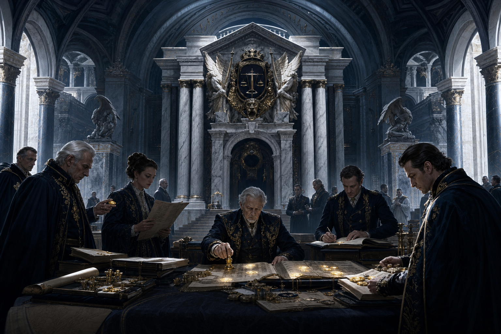
WBU: Old Money + Government
The old houses rule through charters, courts, banks, registries, and inherited seals. Gold is legitimacy: counted, witnessed, taxed, inherited, and weaponized through paperwork.
Concept art and short lore

The old houses rule through charters, courts, banks, registries, and inherited seals. Gold is legitimacy: counted, witnessed, taxed, inherited, and weaponized through paperwork.
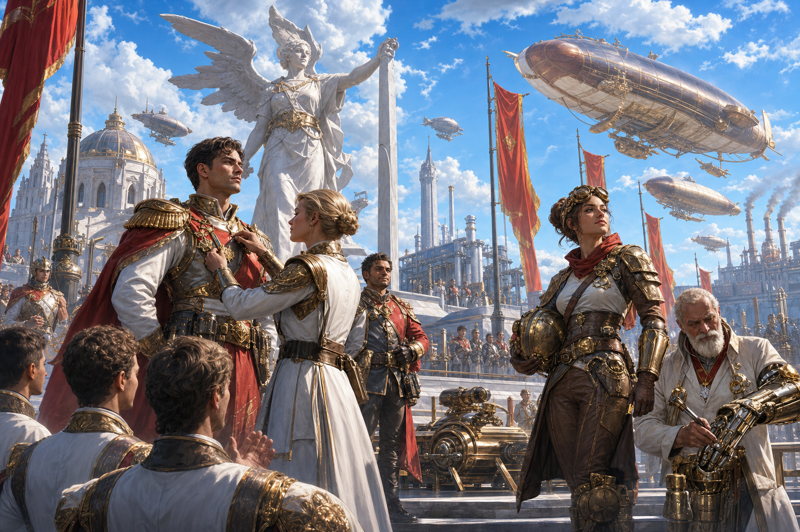
The future arrives as a parade. Heroes are minted, patents become weapons, and public works become monuments. Gold marks medals, funding, upgrades, and chosen ambition.
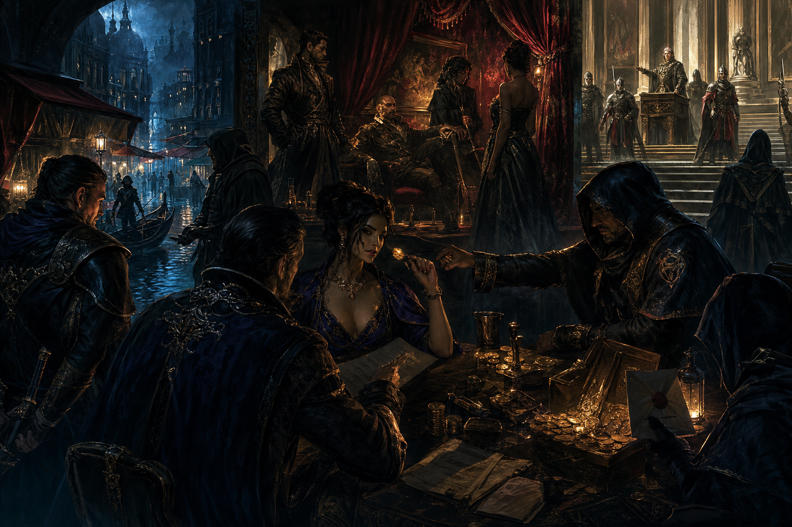
Nothing is illegal if the right person profits. Private rooms, rigged hearings, black-market docks, and coin-lit contracts reveal the real law beneath the written one.
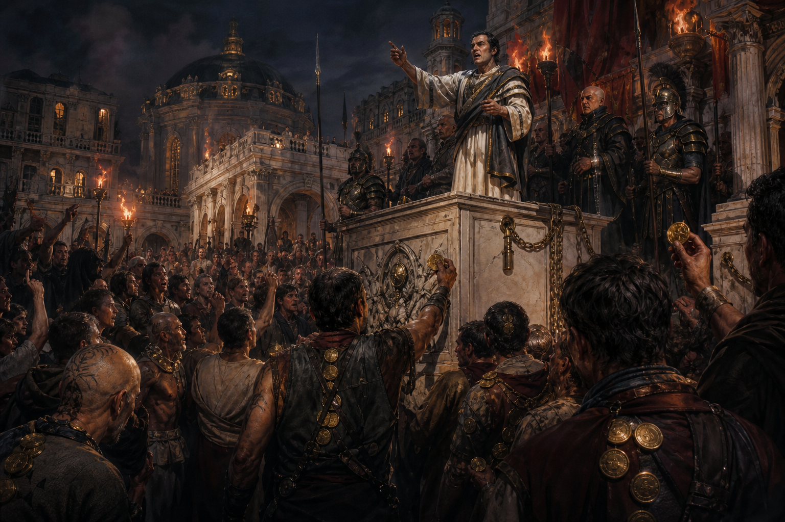
The crowd is a resource, a mandate, and a threat. Citizens gather between solidarity and exploitation, while gold marks wages, debt, patronage, and bought loyalty.
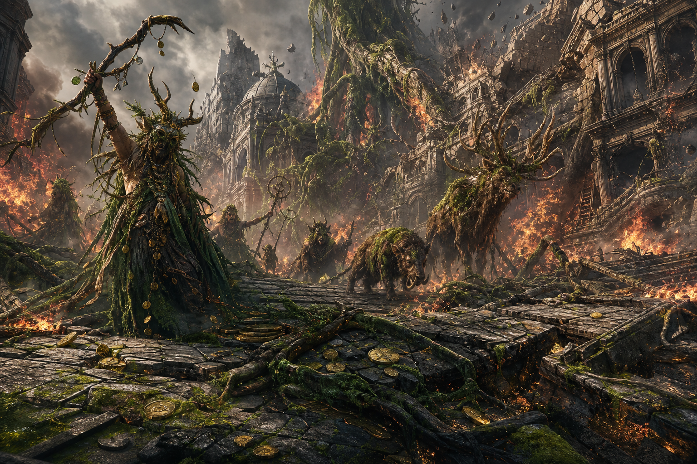
The city cracks, blooms, burns, and remembers it was never separate from the wild. Roads split by roots, Buildings break open, and gold disappears into moss and fire.
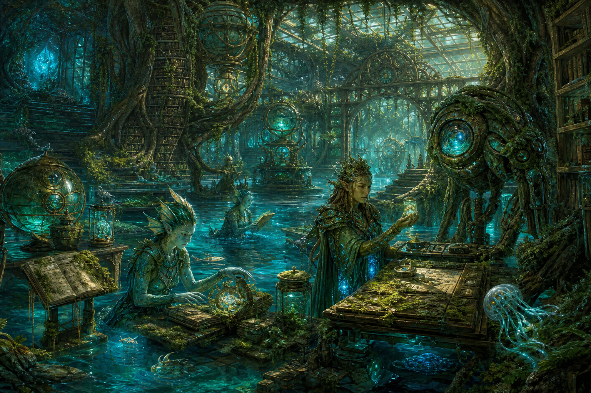
Archives become reefs, laboratories become wetlands, and forgotten machines learn to photosynthesize. This is adaptation, memory, and living systems thinking back.
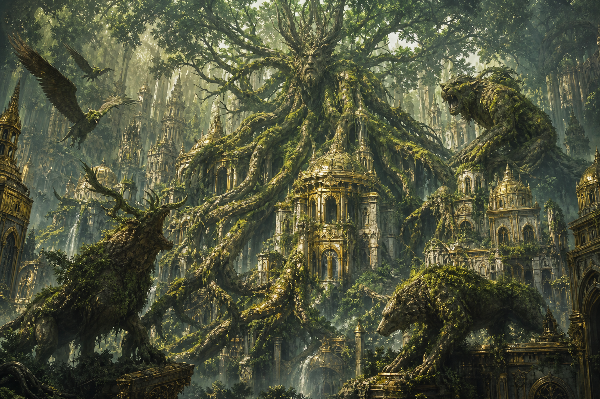
Not a faction, but the bill coming due. It does not negotiate. It grows through vaults, sleeps under roads, and wakes when gold becomes too heavy for the world.
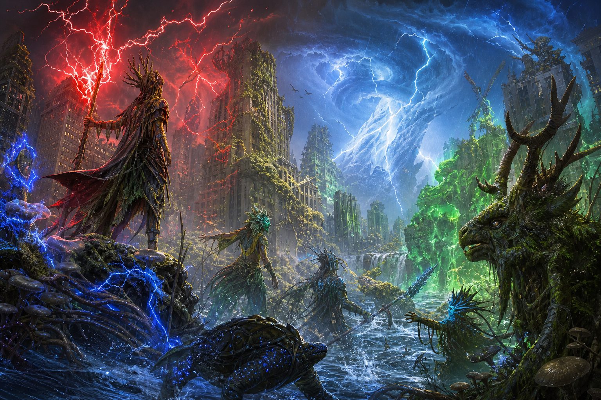
Where storm, adaptation, and inevitability meet, nature becomes a system with teeth. It does not reject progress; it outgrows it.
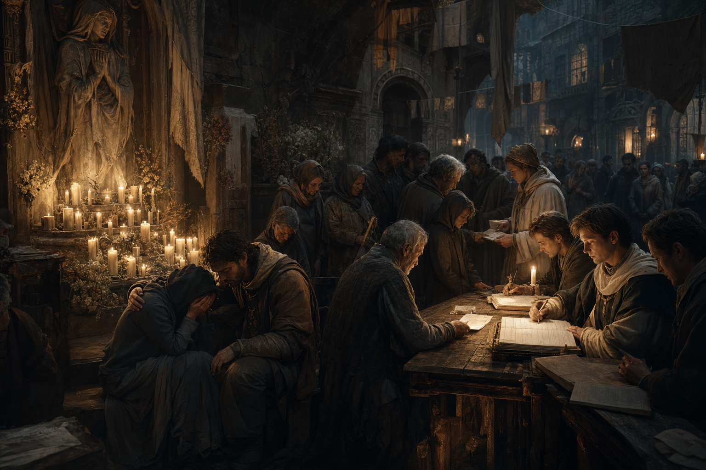
The human cost: names counted, bodies buried, ration papers issued, shrines kept lit, and communities deciding what survives when every power demands payment.
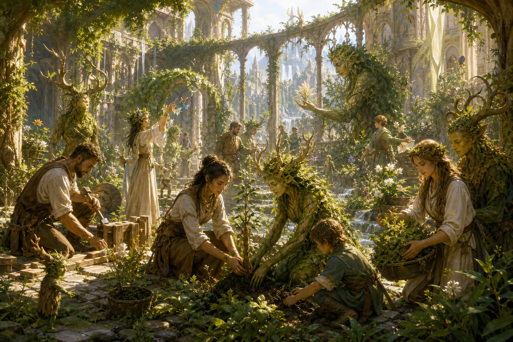
The split can still be healed, but not cheaply. Envoys plant gardens in courtyards, broker treaties with the wild, and build sanctuaries without walls.
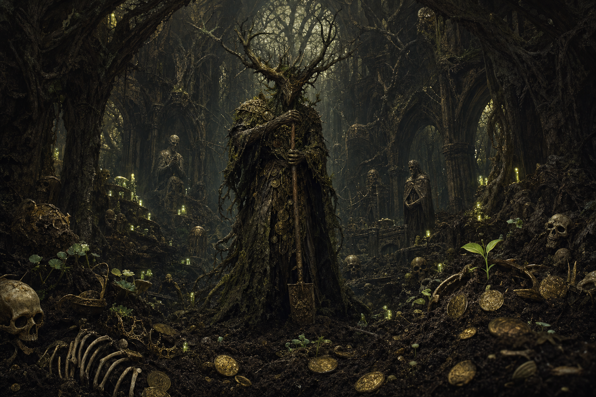
Every empire composts. Every contract ends in soil. Every buried thing becomes leverage. Doom is not tragedy here; it is process.